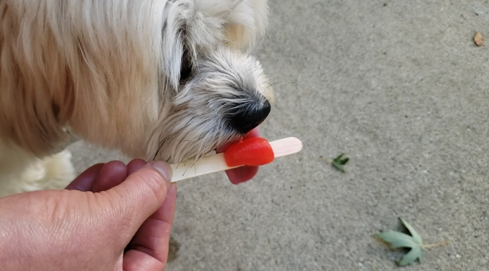
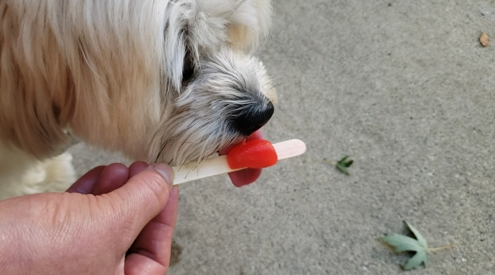

Cooper

Cooper is an 8yr old border collie and lab mix. We rescued him from the Humane Society as a puppy! He loves going on long walks/runs, but he stops to sniff something every few steps. Hes pretty friendly, but he loves to loudly bark at delivery people who ring the doorbell.
Whenever it's movie night, Cooper has to join on the couch/bed or he feels left out. He loves to cuddle and pats on his tummy. Cooper will play fetch for about 2 or 3 rounds, but he quickly gets bored. He leaves his toys all around the house for the rest of the family to find.
Photo Gallery


Likes
- Peanut butter
- Going on long walk
- Sleeping
Pappy

Pappy is a 7 year old morkie. Most days he prefers to spend it laying around the house in his various favorite spots. Most of the time you can find him lying in his bed. He loves going with walks, but still hasn’t figured out how to approach other dogs without scaring them off. He loves his family and loves to keep intruders away even for his size.
He also enjoys playing with his favorite basketball. He loves pushing it around, scratching it, or even talking with it. He also loves his little stuffed animal too. Pappy also loves to be scratched and will ask you to keep scratching until he is happy
Photo Gallery


 

Likes
- Taking naps with his paws in the air
- Getting scratches or belly rubs
- Any kind of dog treats
Luna

Luna is a German shepherd mix and a fireball of energy. Oftentimes, destroying anything in her path she will take and hide all your socks, shoes, and clothes for her to chew on. She loves playing catch at the park, it always gives her the zoomies.
Luna is a very jealous, loving, and protective dog. She really embraces her inner chihuahua and will bark at any stranger, car, or noise at night. She makes the perfect guard dog. But she is not at all aggressive. Luna is all bark no bite!
Photo Gallery


Likes
- Chicken
- Park
- Belly Rubs
Nickels

Nickels was adopted from Ohio in 2010. He turned 13 years old in June 2023, which he celebrated with a Taylor Swift themed birthday party. Nickels often travels with his family; he has been to over ten states. He has lived in Illinois and California. Nickels is a very unique dog- he is allergic to meat. His favorite word is “present.” His one true joy is receiving and opening gifts with his family.
In 2020, Nickels’ brought home a new dog: Socks. Socks is potentially the villain in Nickels’ life. He destroys Nickels’ favorite toys and is highly allergic to peanut butter, which means Nickels now rarely gets his favorite treat! However, when you find them sharing a dog bed, you wonder if the sibling rivalry is all a facade.
Photo Gallery


Likes
- Plush Toys
- Wrapping Paper
- Dog Parks
Cooky

Cooky is an 11 month old Bernedoodle. He likes to play, run around, go on walks, eat snacks and treats (not his own dog food), get pets and belly rubs, and cuddle. You can usually find him playing with his toys in the living room, chilling in the office room with my dad, or cooling off in the garage.
He’s still a baby, but he can get super hyper. Whenever someone rings the doorbell, Cooky gets really excited, barking and dashing towards the front door. He also jumps really high when he’s hyper and wags his tail like crazy. Overall, though, he likes to chill and cuddle just as much as he likes to play
Photo Gallery


Likes
- Dog cookies
- Pets and belly rubs
- Running around the house